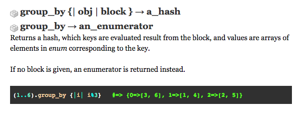

You have a data set, an array, that needs to be separated by categories in a hash. If "group_by" sounds like the method you wanted to use on your enumerable, you probably started with a quick Google search and referenced Ruby Docs. But, if you're new to this game, like me, you probably weren't sure how to make sense of the explanation Ruby Docs gives below. 
#group_by will expect you to input a block with your criteria for grouping. As a return, you'll be given a hash- the keys identify various groups and the values are arrays containing the members of those groups.
In this example, we are given a range of numbers from 1 to 6. The group_by will iterate through this range of numbers, asking which are divisible by 3. Starting with group 0, the results 3 and 6 are grouped because the numbers are divisible by 3 with 0 remainders. Group 1 are representative of numbers, in the range of 1 to 6, that, when divided by 3, had a remainder of 1. The grouping continues with the same methodology onto group 2.
Though this Ruby Doc example just shows how integers can be grouped, you can imagine the usefulness of group_by with names, types of foods, or countless types of categories. Run with it!